Findings
Platform
Findings is a B2B risk management platform that enables enterprises to manage vendor risks while helping vendors streamline compliance and accelerate sales cycles. The platform supports multiple domains, including cybersecurity, ESG, regulatory compliance, and cloud app integration, leveraging smart questionnaires, risk assessment tools, and automated workflows to help organizations operate securely and efficiently.

As the lead product designer, I was responsible for the end-to-end redesign of the Findings platform, as well as the design of numerous new features from scratch. A key challenge was balancing the needs of two distinct user groups: enterprises and vendors while significantly improving usability, navigation, and overall platform efficiency.
During the research phase, I identified two primary user groups, each with distinct needs:
Enterprise Users
- Senior Executive – Requires a high-level overview to quickly assess the organization's compliance and risk status.
- Compliance Officer – Manages vendor interactions and risk assessments on a daily basis.
Vendor Users
- CISO (Chief Information Security Officer) – A cybersecurity expert responsible for answering detailed security questionnaires.
- Non-technical Respondents – Professionals like legal advisors or managers who must complete questionnaires without deep cybersecurity knowledge.
The research insights guided the design focus on the following key areas:
-
✓
Clear Differentiation Between Enterprise & Vendor Interfaces
I implemented a color-coded design system that visually distinguishes the enterprise and vendor environments, ensuring each user group experiences a tailored and intuitive interface.
-
✓
Executive-Level Overview Dashboard
Designed an insight-driven dashboard for senior executives, presenting key compliance metrics in a concise, easily digestible format with a high capability filter system.
-
✓
Streamlined Vendor Management & Risk Assessments
Optimized workflows for compliance officers by enhancing vendor onboarding and streamlining the assessment process. Improved overall vendor evaluation by seamlessly integrating assessment evolution with a risk monitoring app, providing a comprehensive and real-time risk overview.
-
✓
Adaptable & Simplified Questionnaires
Refined questionnaire structures to accommodate both cybersecurity professionals and non-technical users, ensuring clarity while highlighting key platform features.
-
✓
Enhanced Questionnaire Editor
Redesigned the questionnaire-building interface, improving usability and flexibility for constructing complex compliance forms.
A single design system supports both environments, with visual differentiation driven mainly by distinct primary colors, while all components, behaviors, and layouts remain consistent.
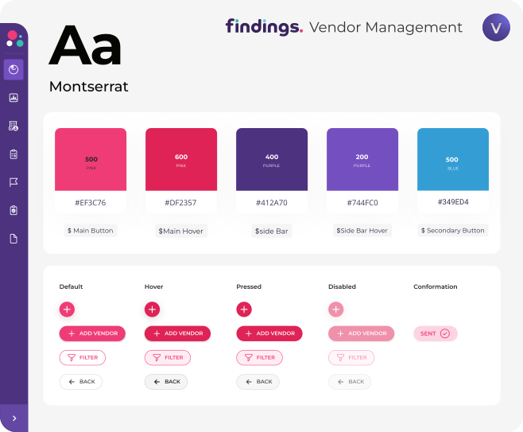
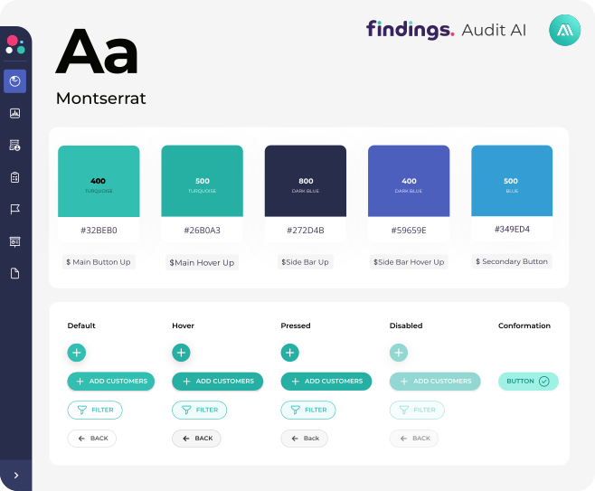
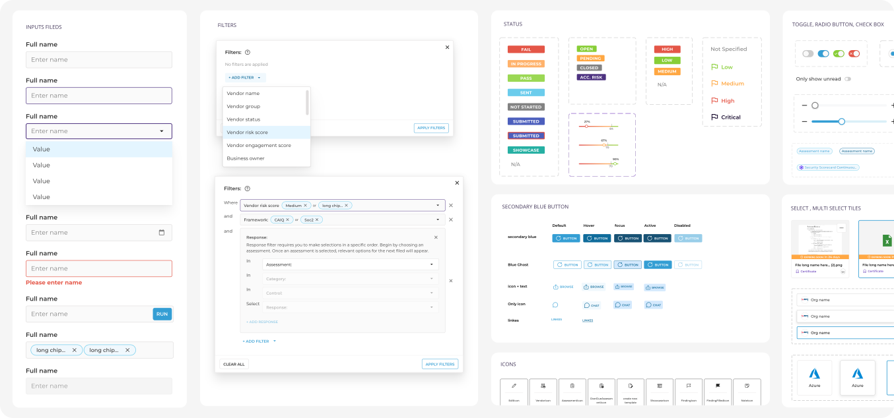
Designed an insight-driven dashboard for senior executives, presenting key risk and compliance metrics at a glance to support fast, informed decision-making. The data is clearly segmented across multiple layers of the product: organization-wide, vendor-specific, and at the level of individual findings and controls. A powerful filtering system enables quick slicing by each dimension.
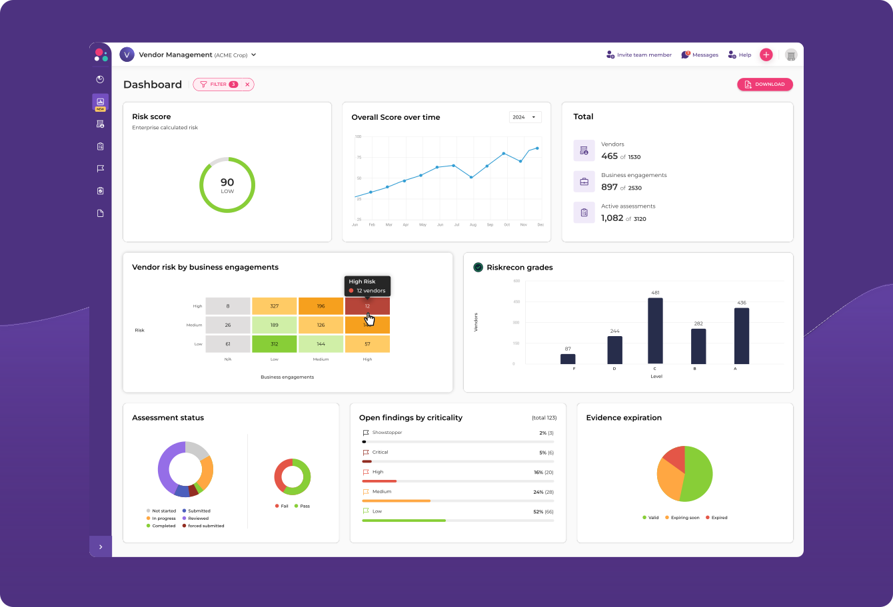
Streamlined vendor evaluations by embedding live app monitoring scores into the vendor table and vendor card, alongside assessment data in a single place — providing compliance teams with immediate, real-time risk insights without switching contexts.
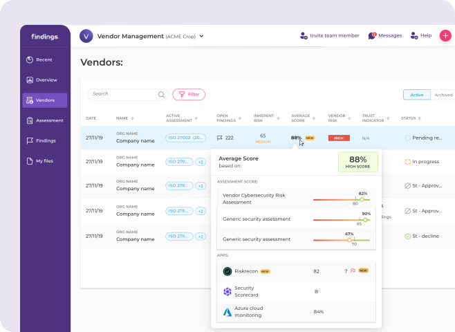
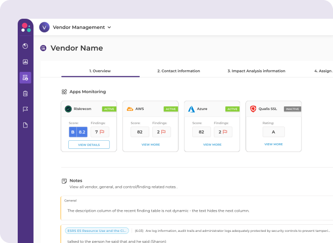
Redesigned the questionnaire structure with a focus on clarity, guidance, and ease of use, integrating AI-powered tools that provide real-time control explanations, answer examples, and improvement suggestions — significantly reducing time-to-completion and improving submission quality. In addition, a separate AI-driven knowledge base and automated response feature was developed and is covered in a dedicated case study.
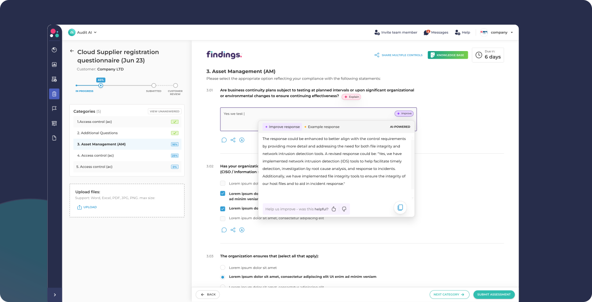
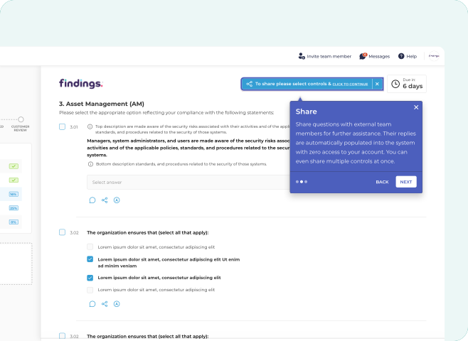
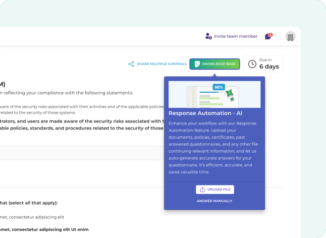
Redesigned a highly complex Assessment editor to improve usability, making it easier to build and manage advanced compliance forms with features like follow-up subtasks and tag-based triggers.
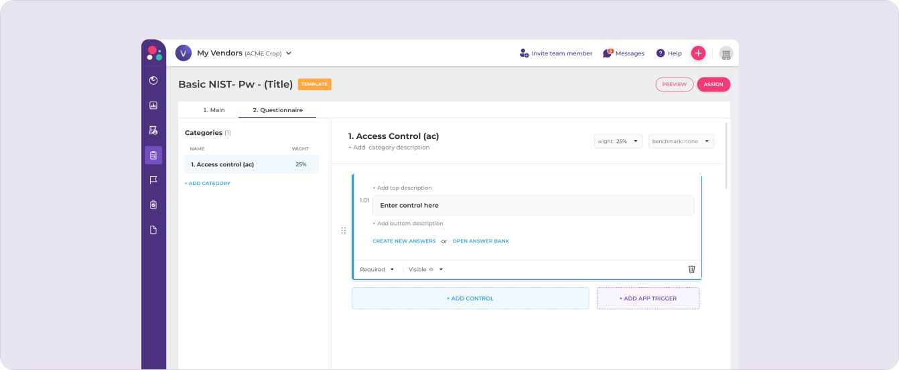
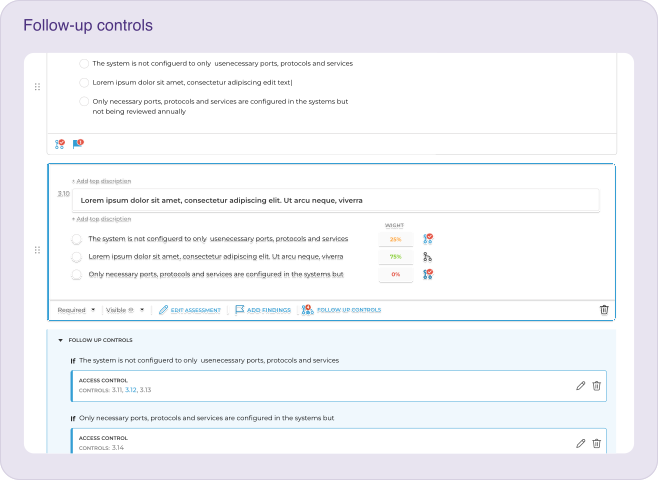
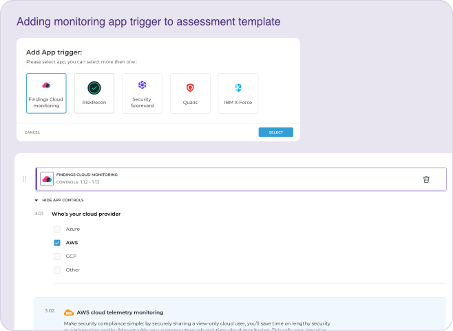
The redesigned platform, alongside the new features, transformed a highly complex system into an intuitive, efficient, and user-friendly experience. Positive feedback and strong adoption across enterprise and vendor teams confirm significant improvements in usability, task completion, and overall satisfaction.
The project demonstrated my ability to independently lead large-scope UX projects, create a comprehensive design process, and deliver measurable impact.
For me, it also reinforced the importance of close collaboration with developers and stakeholders, and the value of getting early feedback from real users.